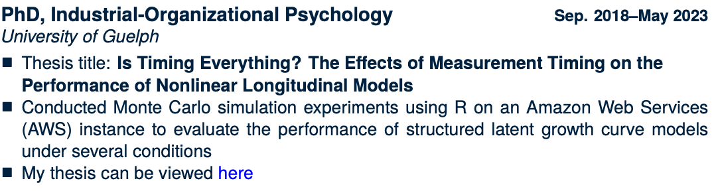
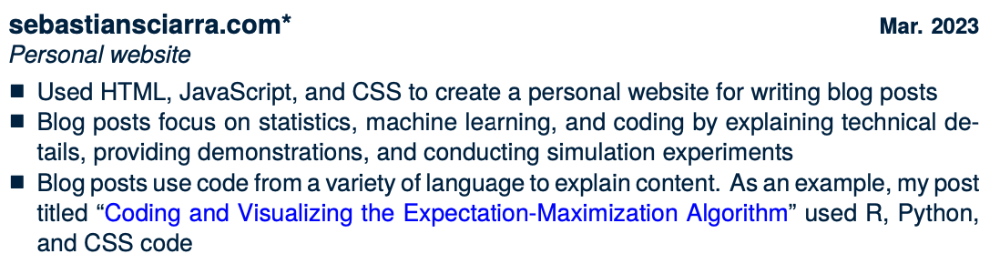
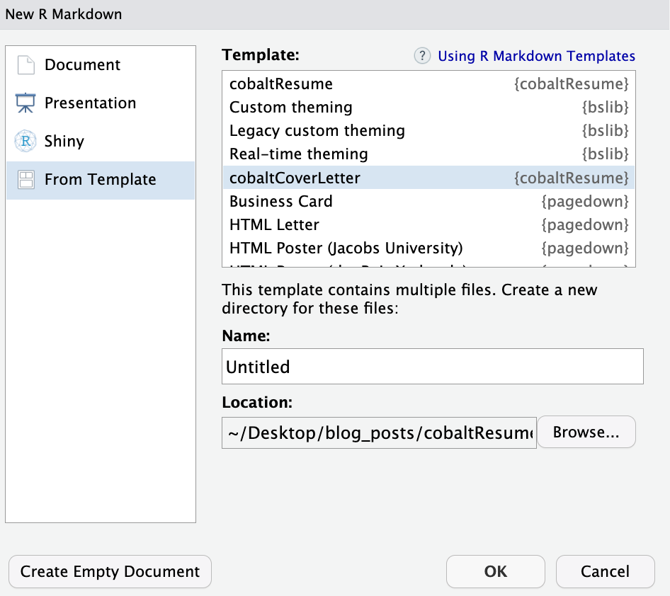

The goal of cobaltResume is to create professionally-looking résumés and cover letters. Here is a résumé I created for myself cobaltResume: my resume.
Installation
You can install the development version of cobaltResume GitHub and load it into your session with:
#install.packages("devtools")
devtools::install_github("sebsciarra/cobaltResume")
library(cobaltResume)Creating a résumé
Résumés can be created by using cobaltResume template for résumés.

 In the resulting .Rmd file, a résumé can be completed by using three features. First, information related to identification and skills can be included in the résumé by filling in the appropriate YAML header variables shown below.
In the resulting .Rmd file, a résumé can be completed by using three features. First, information related to identification and skills can be included in the résumé by filling in the appropriate YAML header variables shown below.
firstName: "firstName"
lastName: "lastName"
position: "Position" #job position being applied to
date: "date"
output:
pdf_document:
template: "cobaltResume.tex" #template file (do not change)
#hyperlinks (delete or leave blank blank if not necessary/do not exist)
#escape any special characters with two backslashes (for example, see email variable)
githubLink: "github.com/user" #link to GitHub
githubName: "githubHandle" #GitHub username
personalWebsite: "personalwebsite.com"
linkedinName: "firstName lastName"
linkedinLink: "linkedin.com/in/personal_link"
email: "email\\@domain.com"
#skills + citizenship
skills: "R, SQL, Python, LaTeX, Bash, HTML, JavaScript, CSS, Machine learning, Data science, Data visualization, Knowledge translation" #skills relevant to the job
citizenship: "Citizenship status" #e.g., work permit/study permit/Permanent resident/citizen, etc.Second, sections can be created in the .Rmd file and accessorized with fontawesome icons (for a full list, see fontawesome icons). For example, \faSuitcase\ Employment results in the header shown below.
Third, résumé entries can be completed using create_resume_entry(). Two examples are provided below.
create_resume_entry(title = "PhD, Industrial-Organizational Psychology",
subtitle = "University of Guelph",
date = "Sep. 2018--May 2023",
first_point = "Thesis title: \\textbf{Is Timing Everything? The Effects of Measurement Timing on the \\newline Performance of Nonlinear Longitudinal Models}",
second_point = "Conducted Monte Carlo simulation experiments using R on an Amazon Web Services (AWS) instance to evaluate the performance of structured latent growth curve models under several conditions",
third_point = "My thesis can be viewed \\href{\\detokenize{https://atrium.lib.uoguelph.ca/xmlui/bitstream/handle/10214/27543/Sciarra_Sebastian_202304_PhD.pdf?sequence=1&isAllowed=y}}{\\textcolor{blue}{here}}")
create_resume_entry(title = "\\href{sebastiansciarra.com}{sebastiansciarra.com}\\footnote{clickable hyperlink to the corresponding repository on my GitHub}", subtitle = "Personal website", date = "Mar. 2023",
first_point = "Used HTML, JavaScript, and CSS to create a personal website for writing blog posts",
second_point = 'Blog posts focus on statistics, machine learning, and coding by explaining technical details, providing demonstrations, and conducting simulation experiments',
third_point = 'Blog posts use code from a variety of language to explain content. As an example, my post titled ``\\href{https://sebastiansciarra.com/coding_tricks/em_demo/}{\\textcolor{blue}{Coding and Visualizing the Expectation-Maximization Algorithm}}" used R, Python, and CSS code')Note that LaTeX code can be inserted and will be rendered. The above two examples produce the following two entries in the resulting PDF file:

As an aside, there is an asterisk at the end of the personal website, because it is a clickable hyperlink to the corresponding GitHub repository. This not shows up as a footnote, as shown below.
Creating a cover letter
Cover letters can be created by using cobaltResume template for cover letters.

In the resulting .Rmd file, a résumé can be completed by using three features. First, information related to identification and skills can be included in the résumé by filling in the appropriate YAML header variables shown below.
firstName: "firstName"
lastName: "lastName"
position: "Position" #job position being applied to
date: "date"
output:
pdf_document:
template: "cobaltCoverLetter.tex"
hyperlinks (delete or leave blank blank if not necessary/do not exist)
#escape any special characters with two backslashes (for example, see email variable)
githubLink: "github.com/user" #link to GitHub
githubName: "githubHandle" #GitHub username
personalWebsite: "personalwebsite.com"
linkedinName: "firstName lastName"
linkedinLink: "linkedin.com/in/personal_link"
email: "email\\@domain.com"
#recruiter info
recruiterName: "Recruiter Name"
organization: "Organization Name"
organizationStreet: "200 Bay St."
organizationCityPostal: "Toronto, ON M5J 2J2"
#greeting/closing + citizenship
greeting: "Dear Mr./Mrs. Recruiter Name"
emailClosing: "Sincerely"
citizenship: "Citizenship status" #e.g., work permit/study permit/Permanent resident/citizen, etc.Merging the résumé and cover letter into one PDF
To merge the résumé and cover letter into one PDF, make sure that each file has been created from the appropriate template and created within an R project. Thus, there should be two folders: one for the résumé and one for the cover letter. Once the résumé and cover letter .Rmd files have been created, they can be merged by specifying the knit YAML variable in the résumé .Rmd file such that